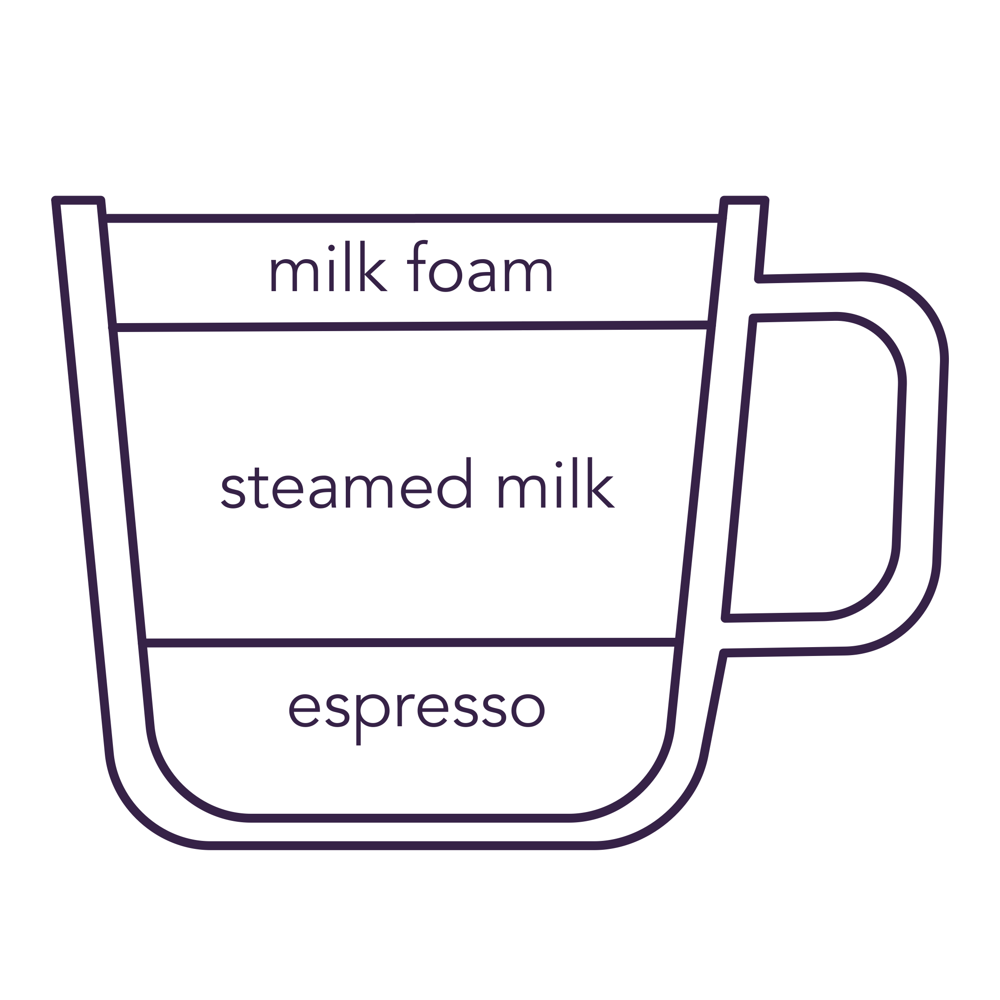

oroma
espresso
benefits
With a history of over 100 years, espresso provides a luxurious, bold, and creamy coffee experience. Typically extracted at around 9 bars of pressure, this means that the coffee goes through almost 9 times the standard pressure of our surroundings through an espresso machine.
Shots of espresso are accompanied by a creamy crema and result in more caffeine than a standard coffee, so you'll be feeling the effects after only a few sips.
Espresso is the base for many Italian coffee drinks. Some of the most-common espresso drinks are the americano, the latte, and the cappucino.
espresso is the foundation for the following drinks

espresso shot only
typically in single (solo) or double (doppio) shot amounts
americano
espresso with added hot water

latte
espresso with steamed milk and a little foam
cappucino
espresso with light steamed milk and extra foam
what you need

espresso machine (manual or automatic)

ground coffee (fine setting)

espresso tamper
01
Select your type of espresso machine.
If you are using a fully automatic espresso machine, follow the instructions from your machine to extract your desired espresso straight from whole beans.
Manual or pump espresso machines require the following steps to achieve the right espresso.

02
Add the finely ground espresso to the portafilter (7-9 grams or 1 tbsp coffee per shot of espresso).
03
Level the grounds by running your finger across the top of the portafilter. Hold the tamper like a doorknob and begin to apply pressure to the grounds. Apply enough pressure to achieve a nice shaped puck shape, without any gaps or loose spots.
04
Making sure your machine is pre-heated, insert the portafilter into your machine and extract the espresso.
The ideal brewing time is between 20 and 30 seconds (and 2 oz or 60 mL espress for a double shot), once the pump starts.